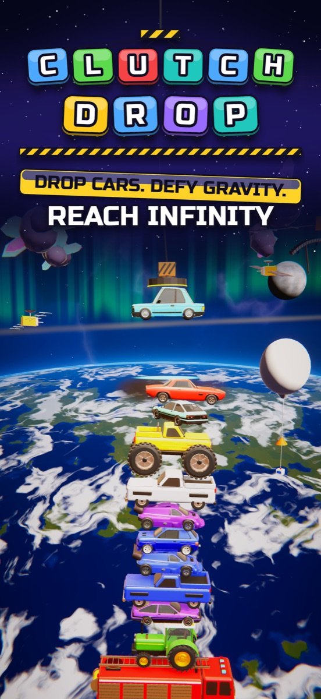

Swing the crane, drop the car and build the tallest tower of cars ever, from the street to the stars.
Get it on the App Store
Time every drop to land it dead centre, chain PERFECT drops for huge combos and keep the tower standing as it sways. Climb through the clouds into orbit and deep space in SPACE RACE, take on 160 levels across 16 worlds, and play the Daily Launch.
Plays offline. No ads, no accounts, no tracking.